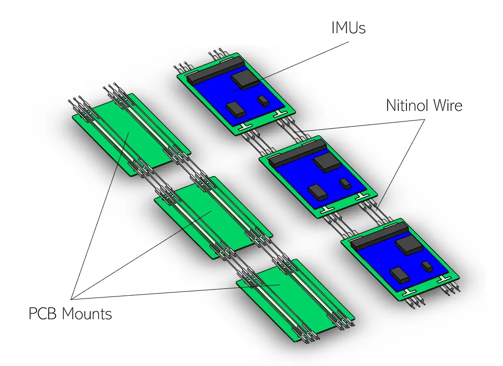
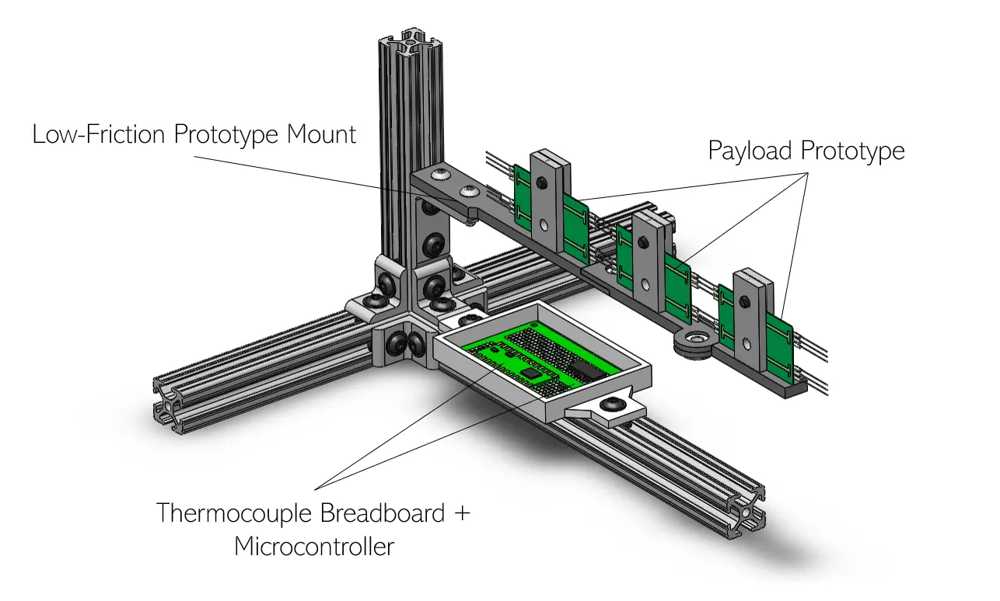
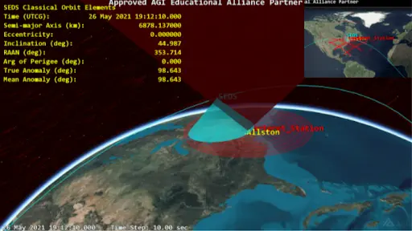

The Harvard Satellite Team is a student-led engineering team with Harvard’s SEDS chapter developing a 2U CubeSat as a platform to test a shape-memory alloy-based solar panel deployment system. The CubeSat employs an in-house design for it’s bus structure as well as in-house photovoltaic cells for power and a nitinol payload deployment mechanism. The design, prototype, and white paper are being submitted to NASA’s CubeSat Launch Initiative (CSLI) targeting a LEO deployment in 2023.


Payload Team Lead:Nitinol Payload Design:As the Payload Team Lead, I oversaw the research and development of our three initial payload candidates including the final nitinol design, a bistable, soft pneumatic actuator, and a central torsion spring deployment system. Having selected the nitinol design, I now lead the manufacturing of six prototypes to test varying properties of the nitinol wire and PCBs. This semester we will finalize the design and begin integration with the satellite bus.Payload Test Development:Accurate payload deployment test and evaluation requires replicating a 0G environment like that of low Earth orbit. To this end I led the design and construction of a gravity-offloading test stand with low-friction hinges to accurately and quantifiably evaluate the performance of the nitinol. To maintain accurate independent variables, the stand includes integrated thermocouples to provide real-time data as to the temperature of the wire as it is actuated.

Bus Team Member:Orbital Plotting and Central ComputerAs a Bus Team member, I learned Ansys' Systems Tool Kit to model our CubSat’s orbital trajectory and communication coverage. I also selected the satellite's on-board computer based on low Earth orbit environment and payload requirements. Finally, I co-authored a white paper on CubeSat design entitled "A Reliable Means of Power Collection and Storage Using a Deployable Soft, Rollable Solar Panel" for submission to NASA's CubeSat Launch Initiative (CSLI).